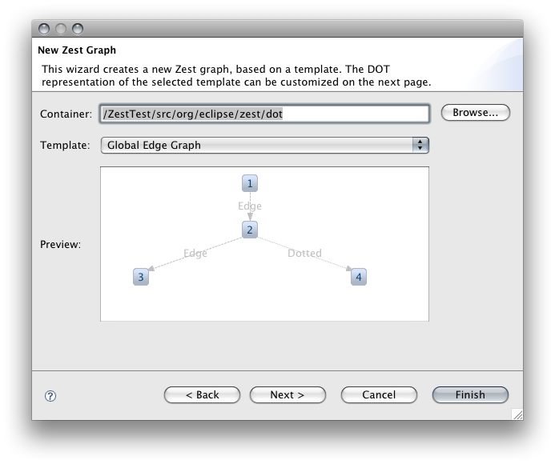

General information, documentation and resources are available at: http://wiki.eclipse.org/Graphviz_DOT_as_a_DSL_for_Zest
Requirements: Eclipse 3.4 and GEF Zest visualization (Ganymede), org.eclipse.zest.import (dot4zest)
Graphviz DOT as a DSL for Zest - M3: Zest wizard for Graphviz import (Bug 277399)
This bundle defines a New-Wizard called 'Zest Graph' under a category labeled 'Visualization':

In the first page the container and a graph template are selected, the resulting Zest graph for the template is previewed:

In the second page the DOT representation of the selected template can be customized:

After the wizard finishes, it tries to run the generated Zest Graph to display the result (here customized in the second page):

To have the generated file launch immediately, setup a project that has JUnit and all Zest bundles (including org.eclipse.zest.dot.export) on the classpath and create the graph in the "org.eclipse.zest.dot" package (M4 will provide a wizard for a fully configured Zest project, see the dot4zest wiki page).